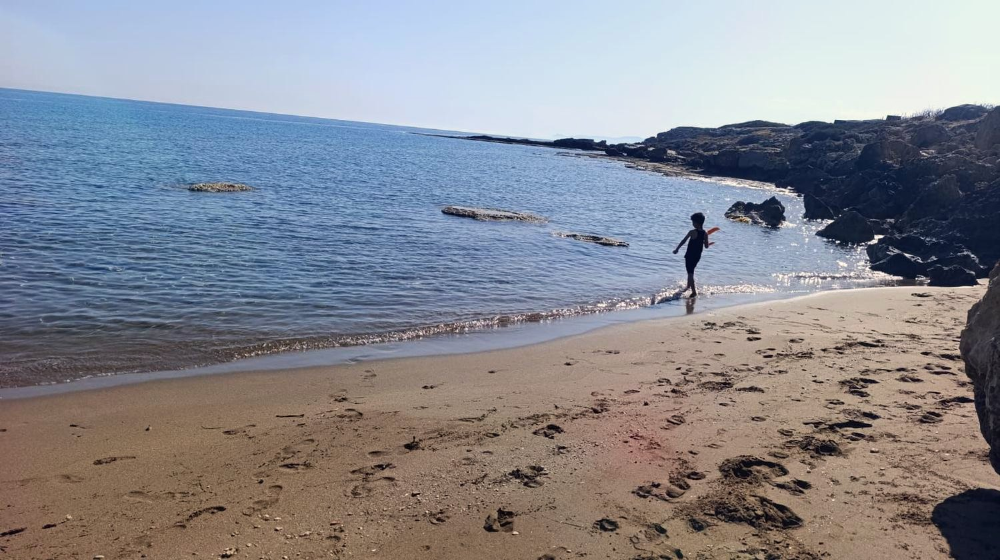
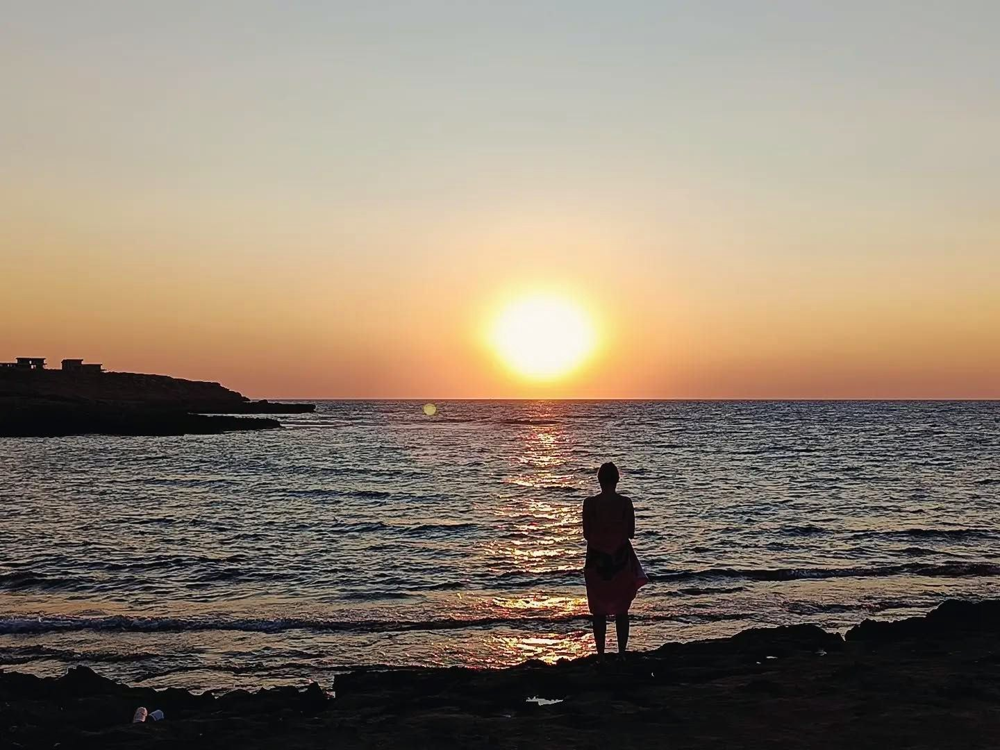

Από όλη την Κύπρο.
Χωρίς πτήση. Πόση ώρα κάνει η διαδρομή από την πόλη σας και τι πρέπει να ξέρετε για τη διέλευση.
Χρόνοι διαδρομής
Από πού έρχεστε;
Οδικώς ως τη Suerte
~1 ώρα
Κατά προσέγγιση χρόνος οδήγησης. Δεν περιλαμβάνεται ο χρόνος στο σημείο διέλευσης.
Οδηγίες στο Google Maps
Από τον νότο
Η διέλευση, βήμα βήμα
Οι κανόνες αλλάζουν κατά καιρούς. Τελευταίος έλεγχος: Νοέμβριος 2026. Αν έχετε αμφιβολία, στείλτε μας μήνυμα πριν ξεκινήσετε.
- ΈγγραφαΟι Κύπριοι και οι πολίτες της ΕΕ περνούν με ταυτότητα, οι υπόλοιποι με διαβατήριο.
- Ασφάλεια αυτοκινήτουΗ ασφάλεια του νότου δεν ισχύει στον βορρά. Βγάλτε βραχυχρόνια ασφάλεια στο σημείο διέλευσης.
- ΕνοικιαζόμεναΤα περισσότερα ενοικιαζόμενα αυτοκίνητα του νότου δεν είναι ασφαλισμένα για τον βορρά. Ρωτήστε την εταιρεία ενοικίασης πριν ξεκινήσετε.
- Από πού να περάσετεΑπό Λευκωσία, Λεμεσό και Πάφο: Άγιος Δομέτιος. Από Λάρνακα: Πέργαμος. Από Αγία Νάπα και Πρωταρά: Στροβίλια.
- ΧρήματαΣτον βορρά χρησιμοποιείται η τουρκική λίρα. Οι κάρτες γίνονται δεκτές σε πολλά μέρη. Έχετε λίγα μετρητά για τα μαγαζιά του χωριού και τη λαϊκή.
- Κινητό & ίντερνετΗ περιαγωγή της ΕΕ συνήθως δεν ισχύει στον βορρά. Ελέγξτε το πρόγραμμά σας.
Ερωτήσεις
Για επισκέπτες από το νησί
Μπορούμε να μείνουμε μόνο μία νύχτα;
Ναι, σε πολλές ημερομηνίες. Οι δύο νύχτες είναι καλύτερες: το πρώτο βράδυ πάει στο ταξίδι και στην τακτοποίηση.
Χρειαζόμαστε μεταφορά;
Οι περισσότεροι επισκέπτες από την Κύπρο έρχονται με το αυτοκίνητο. Το πάρκινγκ στο οικόπεδο είναι δωρεάν.
Τι γλώσσες μιλά ο Mustafa;
Τουρκικά και αγγλικά. Τα μηνύματα από την ελληνική έκδοση του ιστότοπου στέλνονται και με αγγλικό αντίγραφο.
